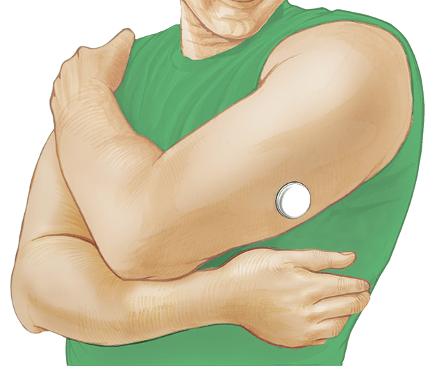

FreeStyle リブレ Pro システム
概要
FreeStyle リブレ Pro フラッシュグルコースモニタリングシステムは、フラッシュグルコースモニタリング技術によって、糖尿病患者さんの治療を一人ひとりカスタマイズすることができます。
よくある質問
- フラッシュ・グルコース・モニタリング(検査)とはどのようなものですか?
- FreeStyle リブレ Pro システムとはどのようなものですか?
- 患者は、MRI や CT スキャンを受ける際にセンサーを外さなければなりませんか?
- なぜ FreeStyle リブレ PRO システムは、測定器の調整の必要がないのですか?
- FreeStyle リブレ Pro システムには何が含まれていますか?
- センサーの大きさはどのくらいですか?
- センサーの装着中が気になりますか?
- センサー装着中に入浴、シャワー、水泳、運動をすることができますか?
- グルコース値を洋服の上から Reader にダウンロードすることができますか?
- センサーは測定器の調整が必要ですか?
- センサーはどのように体に取りつけますか?
- センサーはどのくらいの頻度で測定と測定データの記録を行いますか?
- 14日間の装着期間の後、センサーはどうなりますか?
- センサーが Reader にスキャンされた後、Reader が他のセンサーをスキャンした場合、データはどうなりますか?
- Reader からはどのような種類のレポートが入手可能ですか?
- Reader はどのくらいの頻度で充電する必要がありますか?
- Reader の充電にはどのくらい時間がかかりますか?
- Reader の電源が切れるとどうなりますか?
- Reader の電源が切れると、データが失われてしまいますか?
- Reader の電源は自動的に切れますか?
- 充電中も Reader を使えますか?
- センサーが装着されてからの14日間、患者さんがすべきことは何でしょうか?
- FreeStyle リブレ Pro システムは、他の機器と比べてどのような特徴がありますか?
- ソフトウェアを利用するためにはどのようなシステム仕様が必要ですか?
- 医療従事者はどうすれば FreeStyle リブレ Pro のソフトウェアを入手できますか?
- センサーから患者のデータを Reader にダウンロードした後、どのようにレポートが作られるのですか?
- ソフトウェアのレポートは、どのように患者さんひとりひとりのデータを識別するのですか?
- この製品の保管方法を教えてください？
- センサーパックやセンサーアプリケーターなどの使い捨ての部品をどのように廃棄処分しますか?
フラッシュグルコースモニタリングは 、より詳細な血糖状態を知るうえで必要とされる十分なグルコースデータを、より手 軽 に、より簡単な操作で得られるようにデザインされています。フラッシュグルコースモニタリングのユニークな点は、センサー上を
Reader (読取装置)でスキャンすることによってグルコースデータを収集できることです。
フラッシュグルコースモニタリングシステムのもうひとつの重要な特徴は、小型で完全に使い捨てのセンサーであることです。このセンサーは、測定器の調整も指先穿刺も必要とせず、自動的にグルコースデータを測定、記録、データ保存することができます。

FreeStyle リブレ Pro フラッシュグルコースモニタリングシステムとは、フラッシュグルコースモニタリングの区分では初めての製品であり、指先穿刺 の煩わしさから患者を解放し、これまでよりも多くの情報に基づいて治療内 容を決定するために、深い洞察を主治医に提供できるようデザインされています。

X 線、 MRI （核磁気共鳴画像法）または CT （コンピュータ断層撮影法）スキャンなど、強度の磁気や電磁放射線を含む受診を予約している場合、装着したセンサーを取り外し、検査終了後に新しいセンサーを貼 付する必要があります。これらの検査 がシステムの性能に及ぼす影響については評価されていません。
FreeStyle リブレ Pro センサーは工場出荷時に測定器の調整がされ、センサー間のばらつきを最小限に抑 えるよう製造されています。穿刺による測定器の調整の必要はありません。
FreeStyle リブレ Pro システムには 3 つの 主要な 構成品が含まれます。
- センサーキットには、センサー パック（センサーアプリケーターと共にセンサーの準備に使用）、センサーアプリケーター（センサーを上腕の後ろ 側 に装着する）、取扱説明書（センサーの装着方法の説明）が含まれます。
- Reader キットには FreeStyle リブレ Pro Reader （患者さんに装着したセンサーを起動し、グルコース値を収集）、 USB ケーブル（コンピュータに接続してレポートの作成や Reader の充電に使用）、電源アダプター（ USB ケーブルと共にバッテリーを充電するために使用）、取扱説明書（システムの操作に必要なすべての情報）、クイックスタートガイド（患者さんがすぐに使い始められるようにするためのガイド）、が含まれます。
- ソフトウェアは医療従事者が患者さんの効果的な糖尿病健康管理プログラムをサポートできるようにすることを目的としており、オンラインおよび CD で入手することができます。
センサーは厚さ5mm、直径35mmです。


Abbott Diabetes Care が実施した試験では、調査対象患者の93.4%（n=30）がセンサー装着中に皮下の不快感を訴えませんでした。

はい。センサーは入浴中、シャワー中、水泳中、運動中も装着することができます。ただし、 水深1mより深いところにセンサーを入れないでください。また、30分以上水に浸さないでください。粘着剤 はセンサーを最長14日間快適に固定できるよう設計されています。
はい。厚さ4cm以内の衣服の上からリーダーで読み取ることができます。

FreeStyle リブレ Pro センサーは工場出荷時に測定器の調整がされており、14日間の装着期間中は穿刺による測定器の調整は必要ありません。
センサーの装着には、センサーアプリケーターと呼ばれる使い捨て器具を用います。センサーアプリケーターを上腕の後ろ側に置きセンサーが身体に装着されるまでしっかりと下方に押し込みます。センサーアプリケーターをそっと身体から引き離します。これでセンサーは皮膚に装着されます。
FreeStyle リブレ Pro システムのセンサーでは14日間にわたり15分ごとの記録を測定し、記録することができます。
センサーは14日間の装着期間終了後、グルコース値の測定を自動的に停止します。
Reader のホーム画面の「センサーデータを取得します」をタッチすると、未報告のセンサーデータがあることを知らせる表示が現れます。このデータを新しいセンサーデータで上書きするかどうかを選択することができます。

日内グラフにはセンサーが測定したグルコース値が日別に表示され、 Reader に設定した 目標グルコース値範囲が表示されます。ホーム画面のオプション記号をタッチし、目標範囲 を選択すると目標グルコース値範囲を変更することができます。グラフにはグルコース値 が350mg/dLまで表示されます。グルコース値が350mg/dLを超える場合は350 mg/dLまで表示されます。
完全に充電したバッテリーは最長2週間持続します。バッテリーの寿命は使用状況によって変わります。
バッテリーを完全に充電するには、少なくとも3時間充電してください。
Reader を使い続けるためには、バッテリーの残量が少なくなったら（低バッテリーアイコンが表示されます）、 Reader を充電しなければなりません。充電が切れたら再充電する必要があります。
Reader 上に保存されたグルコース値データは失われません。
Reader は60秒後にディスプレイを自動的にオフにします。
ご使用いただけません。
腕上の後ろ側にセンサーが装着された後は14日間そのままでいるだけで大丈夫です。患者さんが何かをする必要はなく、入浴中、シャワー中、水泳中*、運動中も装着することができます。
*センサーは水深1メートルまで耐水性能が保証されています。30分以上水に浸さないでください。
FreeStyle リブレ Pro システムは、14日間にわたり正確性、安定性、一貫性を維持することが臨床的に確認されています。指先穿刺による測定器の調整の必要はありません。
- FreeStyle リブレ Pro センサーは工場出荷時に測定器の調整がされ、センサー間のばらつきを最小限に抑えるよう製造されています。指先穿刺によるキャリブレーションの必要はありません。
FreeStyle リブレ Pro ソフトウェアのシステム要件として、以下のオペレーティングシステムが動作するコンピュータ上でご利用ください。
- Microsoft Windows 7 （ 32 または 64 bit ）
- Microsoft Windows 8 （ 32 または 64 bit ）
- Microsoft Windows XP （ Service Pack 3 ）
- OS X Mavericks
FreeStyle リブレ Pro ソフトウェアアプリケーションはオンラインまたは CD で提供しています。
- レポートを作成するには、 Reader キット付属の USB ケーブルを使用して Reader をコンピュータに接 続します。
- 接続されるとホーム画面が現れ、 Reader の接続が完了します。 FreeStyle リブレ Pro ソフトウェアのホーム画面からレポートの作成や Reader の設定変更など、さまざまな機能にアクセスできます。
- レポート作成 画面ではレポートを選択し、レポートのパラメータを設定します。アップロードされたセンサーごとに氏名または患者IDを選択しプロファイルを作成します。
- 表示または印刷するレポートを選択します。複数選択することもできます。
- 時間設定のレポートパラメータ（すべてのレポートに使用されるデータ範囲）および目標グルコース範囲（一部の血糖値グラフに表示され、目標範囲内であった時間 の計算に使用される）はすべてのレポートに使われます。グルコース変動パターン レポートにはこれ以外のパラメータも必要になります。
- レポートのパラメータが設定されると、 Reader が接続されている間にレポートを印刷するか、レポートを表示するか選択することができます。
アップロードされたセンサーごとにプロファイルが必要になります。氏名または患者 ID が保存されると、作成されたレポートに自動的に入力されます。
センサーアプリケーターおよびセンサーパックは4～25℃で保管してください。。 Reader は−20～60°Cで保管してください。
電気機器、電池、とがっているものおよび体液に曝露した可能性のある物質の廃棄に関する、自治体の規制に従って廃棄する必要があります。システム部品の適切な廃棄に関する詳細は、カスタマーサービスにお問い合わせください。